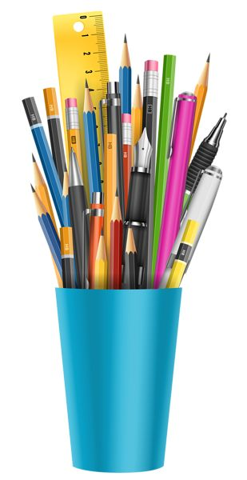

In today’s fast and competitive world, we often get time for ourselves. Over time, our schedule gets very dull and monotonous. That is why we need to indulge in something  in between to keep our minds fresh and active. What’s better than a hobby for this? One of the main benefits of having a hobby is that it is a major stress-buster. You actually enjoy doing it and it satisfies your soul.
In other words, without a hobby, your life becomes an unhealthy cycle lacking any excitement or spark. Hobbies offer you a great opportunity to take a break and forget the worries of your life. They allow you to explore yourself and realize your potential in different areas. Moreover, hobbies can also be a source of extra income. For instance, if you like painting, you can actually sell your art to make some extra money. Likewise, if you have a knack for dancing, you may teach dance classes to people on your holidays. This way your hobby a benefit you both spiritually and financially as well.
Moreover, dance also taught me how to stay strong and push my limits. I have had many injuries while dancing, too many bruises and cuts but that didn’t stop me from pursuing it further. In fact, it pushes me to do my best and realize my potential more than ever. I have enrolled in dancing classes because I wish to make my hobby my career. I feel we all should do things which we enjoy doing. Everyone is running after money and in this race, they give up their likings and preferences. I have learned from this race and decided to not take part in it. I wish to take the road less traveled by and take on challenges most people don’t dare to. In short, my hobby of dancing makes me feel alive and well. It is the only thing I look forward the most to. Thus, I hope to achieve my dream of being a professional dancer and making way for people who wish to make careers out of their hobbies.
My favourite hobby is cooking. I love to cook on holidays. I like to try out new and unique cuisines from different places around the world. It improves my knowledge not only about the vegetation and food habits of the people in that particular area, but it also let me know the type of vegetation there. I usually prefer to cook fresh vegetables with sauces and other ingredients, which are healthy, easy to prepare and looks good to serve. More often than not I also like to prepare different kind of desserts from various parts around the world. Some of the notable dishes that I have prepared are Mexican corn Tortillas, avocado and salsa; white bean peasant soup that belongs to Italy. All you have to do is gather the information from the internet, there is a lot of information available there and gather all the necessary ingredients and prepare a fresh and delicious dish.
Since childhood, I have developed an interest for drawing and love to make sketches, filling a white sheet of paper with life and colors. I don’t know what prompted me towards drawing; nevertheless it is my favourite pastime and my favourite hobby. Drawing has many mental benefits apart from improving your drawing skills with every new sketch you make. It improves your imagination as your mind constantly juggles through the thoughts of making new figures and filling it with colors. To draw a sketch in detail you need to be focused and keep your mind concentrated, eliminating any kind of external distraction. The attention to detail that you put in the drawing will require all your imagination and concentration. The ability to concentrate while doing a particular job stays with you always in other works as well. Drawing is good for the development of the brain and hand-eye coordination. You will constantly think new thins to draw and immediately start giving it shape on paper, working your eyes, brain and hand in synchronization. Drawing is a wonderful hobby which could be fun and in my opinion everyone should take up drawing as a pass time activity if not a full time hobby.
Horse riding is a little different from other hobbies, could be a little costlier but it also has several physical and mental health benefits. To begin with, the hobby of horse riding will take you off the road, and you will be spending more time in the greener postures and open spaces on the out skirts of the city. The hobby will get you more close to the nature and provide a mesmerizing experience of looking at the clear blue sky from the back of a horse. While riding a horse on the outskirts of the city you breathe clean and pure air, which is beneficial for your lungs, body and mind. Apart from the physical benefits, horse riding also transforms you in a kind of animal lover. You will feel a bond with the exceptionally majestic animal, horse. However you will also get a sense of responsibility towards the animal and learn to care for it and feed it. You will learn a lot of interesting facts about horses and their behaviour. You will also learn how to interact with the horse, command it and keep it under control.
Swimming is extremely beneficial for your physical health as it involves the movement of each and every body part and muscle. You swim against the resistance offered by the water making your body more resilient and improving its endurance. It is very good for your heart and keeps it healthy and free from ailments. Swimming is also like a stress buster that relieves your stress and makes you happy and healthy, of course. As you continuously struggle to stay afloat on water, moving all of your limbs; it improves your muscle strength making them more resilient and strong. The deep breadths you take while swimming continuously improves the health of your lungs. Swimming also helps regulate your weight and prevents obesity and the complications arising from it. Swimming in a way tones your complete body and rejuvenates it. There are several other benefits of swimming including that it improves body coordination and balance, making the body more flexible.